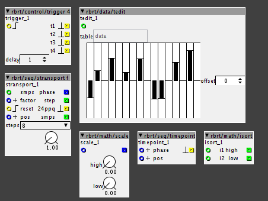
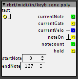
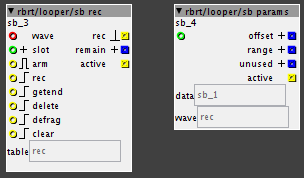

What an AMAZING set of objects you've made!!
I am trying to use "click hold" but don't get any pulses out of it -- is there a range of values I should be setting the short/long/cancel to?

What an AMAZING set of objects you've made!!
I am trying to use "click hold" but don't get any pulses out of it -- is there a range of values I should be setting the short/long/cancel to?
...just did a MAJOR library-sync,
lots of new objects,
especially NEW looper-objects which adress a bunch of issues
I moved the old looper-objects to rbrt/old,I double-triple checked on my machine,
but I hope this will not fuck things up because some have the same name...
more soon!
My enormous looping patch is still working perfectly, object have automatically been replaced with rbrt/old ones...good job as always!
When I'll feel more adventurous and I won't have gigs relying on that patch for a while I'll try to replace and test the new ones, as for now big thumbs up for your work.
cool!
thanks!
....if you feel like,check out the help-patch for lrec,
it's a huge 4-track looper...
wowho!thanks a lot!
...I just updated 'click hold' to meaningful defaults,plus a help-patch
LOOPER BLOCKS III
so here's some new looper blocks,the old ones all got moved to /rbrt/old.
most of all,they are a lot more efficient since it seems like I learned a bit about the basic concepts of coding 
also,there are a lot of bugfixes,for example speed modulation never worked too good..
there are some conceptual changes as well.
there will be some more objects coming at some point
check them out,feedback appreciated!
EDIT : there were some ISSUES,I changed a bit here and there...
in the process,I removed the 'stopfade' - feature on 'lrec' and 'ldub' ,because it was intended to solve a problem that was caused elsewhere.
in general,I will probably start integrating table readout INSIDE the objects,for example to get 'ldub' to work as intended,this will make things a lot easier.
...MORE OBJECTS

here's some random picks of other stuff I did recently...
trigger 4 : triggers 4 pulses when receiving 1 pulse.you can set a delay between the pulses.
useful to overcome execution-order issues.
tedit : bi-directional editing of table data, the object updates itself if the table's contents are changed 'from outside'.
stransport f : starts a phasor with the speeddefined by samples.fractional speed control.
scale : scale an input to a range defined by 'high' and 'low' .
timepoint : when 'phase' reaches the value defined by 'pos' , a pulse is issued.
isort : the higher of 2 incoming integers is put out at 'high' , the lower at 'low'.
useful for defining ranges on a keyboard,maybe
Robert this is fantastic! Can't wait to try your new looper block versions later!
Really happy to see fades icluded into the overdub object as well, thank you so much 
EDIT: I'm testing the updated objects now, ldub in your help patch is making weird bitcrusher like noises when overdub is on. You don't hear the distorted sound once it's recorded.
EDIT2: The new Lrec doesn't like my hacked quantisation phasor. I use a phasor that is stepped acording to incoming 24ppq clock. Your new lrec doesnt like that at all and doesnt sync anymore...
I definitively have to try these looper objects @rbrt !
BTW, the scale objects looks a little like @TheSlowGrowth TSG/math/map object.
hey Simon,
lrec:can you send me the patch with the phasor?
about ldub,I will check again..but as far as I remember,it was working fine on my machine.
cheers r
..oh woops,
@TheSlowGrowth 's math/map is really the same thing,
but interesting how different the approaches are....
guess I'll delete mine,then...
If you need some multisegment mappings (2, 4, 8 or 16 for unipolar or bipolar inputs/outputs),
i have made a series of objects in tiar/kfunc,
Hi!
Excuse me but is the Slot input mean that you can use multiple loops. If yes, how to use it?
...basically,it just defines which area of the table you record into,or a recording offset.
for example,if you set the attribute 'slots' to '8' , the table is divided into 8 slots.
then,you can select via inlet 'slot' which area of the table you want to record to.
technically,you could also use 8 instances of 'lrec' with 'slots' set to '1' and record into 8 different tables,
but using 'slots' greatly simplifies patching and it's a lot more efficient.
keyb zone poly

an approach to handle polyphonic midi at patcher-level.
provides information about held notes and writes a 'map' of these notes
to a table with the same name as the object.
a pulse at the left inlet clears the table and resets note-count.
Sample Bank Recorder (sb rec)
so here's another sampling-thingy,

...you can record a bunch of samles quickly after each other to a table,slicy slicy style..
the start/endpoints are accessable from 'outside' by referencing the object's name..
you can record up to 128 samples in 'slots' (as many as there are midi-notes...)
when a 'slot' already contains sample data, it's locked for recording.
furthermore,you can also delete 'slots' and 'clean up' the resulting empty areas in memory by defragmenting the table!
'sb params' translates start/end to 'in fraction of a table' - values to be used with my 'ldrive' - objects.
there's a help-file to explain all the details.
it's inspired by a great idea of @Ott
it may or may not be tied to this cool thingy by @SirSickSik:
maybe,in some time,I will try to implement saving and loading selected slots to SD-card..
"Hi all, I have a patch idea where I record the audio input to SDRAM, but only when a key is held down. If you press a new key, recording resumes. If you press an old key, the portion of audio that was recorded for that key is played back. The problem is, none of the delay objects have any trigger inputs. Is there some community object that will let me do this?"
this should be doable... though remind that you are limited to the buffer in the time that you can record. So, for example, what should happen when you go over the available amount of buffer?
But this gives me an idea... a recorder that can either record to a selected midi-note (any value between 0 and 127) and a mode that would play a selected buffer, pitch-shifted by the midi note. Though, then again, this will be bound to be very short hi-res recordings if you want 128 samples.. or do it in 8 bit and have a low quality, but long recording time...